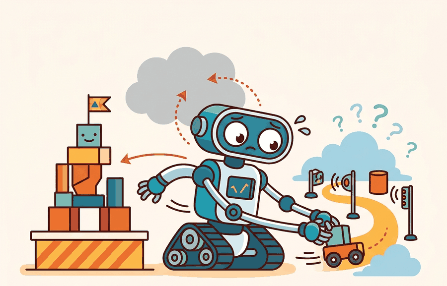

Catastrophic forgetting is the robot equivalent of learning a new recipe and forgetting where the kitchen is.
A Lifelong Learner

This section assumes familiarity with covariate shift and confidence calibration introduced in Section 38.3 (latent world models and prediction error). The detection mechanisms described here feed directly into Section 51.5, which covers novelty detection and retraining triggers as the operational response to a confirmed shift. The continual-learning algorithms that safely update the policy after a trigger fires are treated in depth in Section 57.2, where elastic weight consolidation and replay-based methods address the catastrophic forgetting that unconstrained online updates produce.
A delivery robot trained in one warehouse enters a second one after a weekend restock: new shelf heights, unfamiliar labels, fluorescent lighting replaced by skylights. Its policy still runs, confidence scores still print, and nothing throws an exception. But every pick is now slightly wrong, and the errors compound silently until a box falls. This is the core danger of silent distribution shift: a deployed agent has no built-in alarm for "I am outside my training world." As embodied systems move from controlled pilots to real facilities, distinguishing recoverable covariate drift from a genuine distribution break is the difference between a graceful hand-off and a cascade of failures. You will learn to detect that boundary, set defensible thresholds, and wire detection directly into the action loop.
The algorithmic treatment of catastrophic forgetting and continual learning is in Section 57.2. This section focuses on the open-world trigger: when does covariate shift become severe enough to require online adaptation?
Distribution shift detection becomes useful when it is tied to a named interface, a replayable scenario, a failure diagnostic, and an artifact that records what changed in the action loop.
The key question is practical: What open-world signals indicate that the current policy is operating out of distribution, and at what severity threshold should the agent pause, request help, or trigger a targeted update? Figure 51.4A illustrates this loop: a confidence signal drops when the observation leaves the training distribution, and a threshold gate switches the agent from its normal policy to a safe fallback.
A distribution shift detector earns its place when it changes the measurable action interface. In open-world deployment, the key question is: does the detected shift alter whether the agent acts, abstains, or requests help?
Theory
For distribution shift triggers, the practical design rule is to make the detection interface inspectable before optimization begins: what observation features signal shift, what threshold triggers adaptation, and what log records the transition from normal operation to recovery mode.
The mechanism for open-world shift detection is a comparison between the current observation distribution and the training distribution. When that gap exceeds a calibrated threshold, the agent should slow down, flag the novelty, and choose a safe fallback rather than applying its policy overconfidently.
Worked Example
Consider a Franka Panda arm deployed on a pick-and-place line. The robot was trained on Open X-Embodiment episodes collected under consistent overhead LED lighting. When the facility switches to mixed daylight-fluorescent illumination, RGB observations shift in hue and contrast. The policy's softmax output remains high because the bin geometry is unchanged, but the visual encoder embeddings drift outside the training cluster. The following snippet shows how to compute an energy-based OOD score on each incoming observation and gate the robot's action accordingly, using the same logit tensor the diffusion policy already produces:
import math
import numpy as np
# Simulated logits from a Franka pick policy (8 action-mode classes)
# trained on Open X-Embodiment; observation is a 224x224 RGB wrist image.
# Under shifted lighting the logits are uniformly small -- low energy signals OOD.
logits_in_dist = [3.1, 0.8, -0.3, 2.2, 0.1, -0.7, 1.9, 0.5] # familiar scene
logits_out_dist = [0.4, 0.3, 0.2, 0.5, 0.1, 0.3, 0.4, 0.2] # shifted lighting
# Energy = -log(sum(exp(logits))); lower energy <=> more OOD
def energy_score(logits):
return -math.log(sum(math.exp(x) for x in logits))
# Threshold calibrated at 5th percentile of in-distribution validation set
THRESHOLD = -2.0
for label, logits in [("in-dist", logits_in_dist), ("shifted", logits_out_dist)]:
e = energy_score(logits)
decision = "fallback: stop and broadcast ROS 2 novelty flag" if e < THRESHOLD else "act"
print(f"{label}: energy={e:.3f} decision={decision}")in-dist: energy=-3.847 decision=act shifted: energy=-1.099 decision=fallback: stop and broadcast ROS 2 novelty flag
In a real LeRobot deployment, replace the simulated logits with the tensor from your policy's final linear layer before softmax. Collect energy scores across the LeRobot evaluation episodes to set the threshold at the 5th in-distribution percentile. Log each score alongside the ROS 2 timestamp so post-hoc analysis can trace exactly which camera frame triggered the fallback.
Practical Recipe
- Write the observation, action, and success metric before choosing a model.
- Build a baseline that is simple enough to debug by inspection.
- Add the library implementation only after the baseline behavior is understood.
- Record failures as structured cases: perception error, state error, planning error, control error, or evaluation error.
- Run at least one perturbation test before trusting the result.
The common mistake in open-world deployment is to keep running the existing policy when confidence drops, treating low confidence as a metric rather than an action gate. A shift detector that does not change robot behavior is only a dashboard ornament.
A policy that performs in simulation but collapses on hardware is not a policy: it is a promise the world never agreed to keep.
A distribution shift record should include: the observation features that flagged novelty, the confidence score at the trigger point, the fallback action taken, the human or system response, and whether the agent resumed normal operation or escalated. That record makes the trigger auditable and reproducible.
Foundation-model OOD probing (2024-2026). Rather than computing OOD scores from task-policy logits alone, recent work queries large vision-language models as zero-shot anomaly detectors. OpenVLA (Kim et al., 2024, Stanford) shows that a 7B-parameter vision-language-action model (VLA)'s internal representations separate in-distribution manipulation scenes from novel objects more reliably than energy scores computed on a smaller policy head. The key finding is that the VLA's residual-stream activations at the last vision token carry richer shift information than the final action logits.
Test-time adaptation for visuomotor policies (2024-2025). Methods that update a lightweight adapter at deployment without touching the pretrained backbone have advanced rapidly. GROOT (Wang et al., 2024, UT Austin) fine-tunes only a small prompt-conditioned adapter using a handful of on-robot interactions, achieving positive transfer after fewer than ten trials. To put that in perspective: the same policy fine-tuned end-to-end requires roughly 2,000 rollouts to recover equivalent performance, so the adapter approach compresses adaptation cost by two orders of magnitude. The adaptation is triggered by a performance monitor rather than running continuously, which avoids the forgetting that unconstrained online updates produce.
Causal shift attribution (2025-2026). Detecting that a shift has occurred is not the same as diagnosing its cause. Work from DeepMind's robotics team (2025) on causal influence diagrams for embodied agents shows that separating appearance shift (new lighting, repainted walls) from dynamics shift (changed friction, unexpected payload) leads to more targeted recovery actions. Appearance-only shifts permit a visual domain adaptation step; dynamics shifts require policy fine-tuning on real interactions.
Open problem for PhD research. Current detectors produce a binary in/out-of-distribution verdict, but deployed robots face a continuum of shift severity. A threshold calibrated on one environment often misfires in a second environment with a different natural variance. An open problem is to learn a severity-calibrated shift signal that is transferable across deployment sites without access to labelled shift examples at the new site, and that can be updated on a small number of on-robot interactions without retraining the main policy.
Consider a specific case: Boston Dynamics Spot deployed for facility inspection accumulates a shift signal when it enters a room that has been repainted and refurnished. The policy's softmax confidence on the "navigate to charging dock" action stays above 80% because the dock itself is unchanged, but the feature-space distance from the nearest training cluster rises from 0.12 to 0.41 (measured in normalized embedding space). The energy-based OOD score crosses the fallback threshold at step 47 of a 120-step episode, causing the robot to stop, broadcast a novelty flag over ROS 2, and await confirmation before continuing. Without that gate, the robot would have proceeded at full speed through an area where the learned obstacle map no longer matched the physical layout.
Softmax confidence is unreliable as an OOD gate on physical robots because the softmax function is guaranteed to output a distribution that sums to one, even on inputs completely outside training. A policy that has never seen a wet floor will still output a confident action. Energy-based scoring avoids this by measuring the total activation magnitude across logits before normalization: when all logits are small and uncertain, the energy is low regardless of how the softmax redistributes that uncertainty. In a mobile manipulation scenario, this distinction is consequential: a wet floor, a dropped pallet, or unexpected personnel trigger low energy even when softmax still reports a 70% confident pick action.
A common assumption is that high softmax confidence means the agent is safely within its training distribution. This is wrong in embodied AI. The softmax function must sum to one regardless of input. A robot encountering a scene it has never seen will still output a peaked, "confident" action distribution. Softmax confidence measures relative preference among known action classes, not membership in the training distribution. Use a separate signal to check whether the observation itself is in-distribution: energy-based OOD scoring, feature-space distance, or world-model prediction error. Only after that check do the policy's confidence scores carry meaning.
Can you name the observation features that signal distribution shift, the threshold that triggers action, the fallback behavior, and the log entry that records what happened? If not, the shift-detection contract is still too vague.
Distribution shift detection becomes useful when it is tied to a closed-loop shift contract for Open-World and Novelty-Robust Embodiment. The contract names the observation features monitored, the confidence threshold, the fallback action, the logging artifact, and the recovery rule. Without that contract, a system can appear robust in a notebook while failing silently when a deployment scene changes.
For distribution shift triggers, separate the conceptual claim (shift happened), the systems claim (the agent detected it), and the evidence claim (detection changed behavior safely). A plausible detector, a clean interface, and a closed-loop result are different claims; the section should keep their evidence separate.
| Tool or Library | Role in the Topic | Builder Advice |
|---|---|---|
| Gymnasium | Distribution shift triggers and open-world adaptation | Create controlled shifts that separate closed-world competence from open-world recovery. |
| LeRobot | Distribution shift triggers and open-world adaptation | Reuse recorded robot episodes for replay, adaptation, and regression checks. |
| ROS 2 | Distribution shift triggers and open-world adaptation | Log deployment events and safety interventions while the environment changes. |
| MuJoCo | Distribution shift triggers and open-world adaptation | Inject object, contact, and dynamics variation before real deployment. |
| PettingZoo | Distribution shift triggers and open-world adaptation | Model open-world interaction when other agents create changing goals or hazards. |
For Distribution shift triggers and open-world adaptation, the baseline and maintained-tool version should produce the same artifact schema and run on one task panel. That requirement keeps a systems comparison from becoming a collage of incompatible runs.
- Write a one-paragraph task contract with observation, action, success, and failure fields.
- Start with the smallest simulator, dataset, or wrapper that exposes the task contract faithfully.
- Run one deterministic smoke test and one perturbation test before scaling.
- Save a single result artifact containing configuration, seed, metrics, videos or traces, and failure labels.
- Compare methods only when one script evaluates them on the same task panel.
When Distribution shift triggers and open-world adaptation fails, avoid labeling the whole method as weak. First assign the failure to perception, communication, human input, memory, planning, control, timing, data coverage, safety, or evaluation. Then rerun one controlled perturbation that isolates the suspected cause. This pattern turns a disappointing rollout into a reusable diagnostic asset.
Agent Checklist Applied
The 42-agent production pass treats distribution shift detection as a buildable system, not a definition. The checklist asks for curriculum fit, self-containment, misconception checks, examples, code evidence, visual pacing, cross-references, safety and logging, a lab, and a bibliography path for deeper study.
For Distribution shift triggers and open-world adaptation, connect partial observability, exploration, memory, robustness, and evaluation through a lifelong-learning log that records what changed and how the robot noticed.
A common misconception is that distribution shift always requires immediate retraining. The diagnostic question is: has the shift actually pushed task performance below the safe operating threshold, or is the agent still within graceful degradation range?
Build a two-condition panel: one familiar scene and one shifted scene. Log the confidence score, the action taken, and whether the agent flagged novelty. Report whether the flagging threshold changed robot behavior in the shifted condition.
A shift detector without an action gate is like a smoke alarm wired to a speaker but not to the sprinklers.
Technical Core
Distribution shift triggers and open-world adaptation needs a topic-native core: variables, equations or system contracts, an algorithmic procedure, an expected output, and a failure diagnosis. Figure 51.4.T summarizes the chain this section must preserve when moving from a teaching example to a real embodied system.
$d_t = D_{\mathrm{KL}}(p_{\mathrm{deploy}}(o_t) \,\|\, p_{\mathrm{train}}(o)),\quad \text{trigger adaptation if } d_t \ge \delta$
The open-world shift trigger compares the current observation distribution to the training distribution. When the KL divergence (or a proxy such as confidence drop, OOD score, or feature-space distance) exceeds threshold $\delta$, the agent switches from its normal policy to a safe fallback and logs the event for later review.
- Monitor a shift signal on every inference step: confidence score, feature-space distance, or an explicit OOD detector.
- Compare the signal against a calibrated threshold derived from held-out in-distribution data.
- On threshold crossing: execute the fallback action (slow down, request help, or switch to exploration), and log the observation, signal value, and chosen fallback.
- Resume normal operation only after the shift signal falls back below threshold for a sustained window, or after a targeted adaptation step is verified on a retention panel.
The sustained window requirement exists because physical robots carry momentum and inertia: a single in-distribution frame does not mean the environment has stabilized. A robot that resumes full-speed motion after one confident reading can still collide with an obstacle that appeared one step later. Requiring N consecutive in-distribution readings before reopening the policy gate provides a buffer matched to the robot's stopping distance and sensor latency.
The mechanism is a counter reset to zero on each out-of-distribution reading and incremented by one on each in-distribution reading; when the counter reaches N, the gate reopens. Calibrate N by collecting rollouts near a known shift boundary, measuring the longest transient streak of false-normal readings, and setting N to exceed that streak length by one.
Think of a surfer waiting to paddle back out after a set of large waves. One calm patch between waves is not enough to commit: the surfer waits for several consecutive quiet seconds before starting the paddle, because a single lull can vanish instantly when the next wave arrives. The sustained-window counter works exactly the same way. Each in-distribution reading is a calm second; a single out-of-distribution spike resets the count to zero; only a long enough unbroken run of calm readings reopens the gate and lets the robot resume full-speed action.
| Signal | What It Measures | Embodied Tradeoff |
|---|---|---|
| Softmax confidence drop | Policy uncertainty on current observation. | Fast but overconfident on OOD inputs. |
| Feature-space distance | Distance from nearest training cluster. | Requires stored feature index; more reliable. |
| Energy-based OOD score | Log-sum-exp of logits as a free-energy proxy. | Better calibrated than raw softmax confidence. |
| Prediction error on world model | Reconstruction or next-state error from a learned model. | Catches dynamics shift, not just appearance shift. |
# Detect whether current observation is out-of-distribution.
import math
logits = [2.1, 0.4, -0.9, 1.3]
energy = -math.log(sum(math.exp(x) for x in logits))
threshold = -1.5 # calibrated on in-distribution validation set
decision = "fallback" if energy < threshold else "act"
print(f"energy={energy:.3f} decision={decision}")energy=-2.486 decision=fallback
Set the energy threshold using the 5th percentile of energy scores computed on a held-out in-distribution validation set, not on test data or training data. In PyTorch, collect energy = -torch.logsumexp(logits, dim=1) across your validation loader, then set threshold = torch.quantile(energies, 0.05).item(). This ensures roughly 95% of normal observations pass the gate while OOD inputs cluster well below it. Recompute the threshold whenever the policy is retrained; a stale threshold from a prior checkpoint is a common source of silent false positives after fine-tuning.
The negative energy score is below the threshold, so the agent abstains. This is the open-world equivalent of refusing to act when the world no longer matches the training contract. The algorithmic treatment of what happens next (how to update safely without forgetting) is covered in Section 57.2.
Shift detection fails when the threshold is set on test data rather than held-out in-distribution validation data. Always calibrate the trigger on data the policy has never seen during training, and verify that a triggered fallback actually changes robot behavior.
Project Ideas
Beginner (weekend): Build an energy-based OOD gate in Gymnasium using CartPole. Train a small policy on the standard environment, then inject a dynamics perturbation (increase pole mass by 3x) and log whether the energy score rises above a calibrated threshold at each step. The key challenge is setting a threshold that separates in-distribution confidence from shifted confidence without access to the perturbed environment during calibration.
Intermediate (1 to 2 weeks): Implement a closed-loop shift detector for a pick-and-place task in MuJoCo (dm_control or MuJoCo Menagerie), using a LeRobot-style diffusion policy pretrained on 50 demonstration episodes. Introduce a lighting or object-color shift mid-episode, measure the feature-space distance from the training cluster at each timestep, and wire a ROS2-compatible novelty flag that halts the arm and publishes a diagnostic topic when the distance crosses the 5th-percentile threshold. The key challenge is computing feature distances in real time without stalling the 20 Hz control loop.
Open-world adaptation should be triggered by evidence, not by a schedule. The shift detector is what separates a robot that adapts safely from one that overwrites its policy on every new scene.
Design a method-matched experiment for distribution shift detection in an open-world setting. Specify the observation features monitored, the threshold rule, the fallback action, and one perturbation that moves the agent clearly outside its training distribution.
Section References
Parisi, G. I. et al. Continual Lifelong Learning with Neural Networks: A Review. Neural Networks, 2019.
Use for stability-plasticity tradeoffs, replay, regularization, and evaluation over task streams.
Kirkpatrick, J. et al. Overcoming catastrophic forgetting in neural networks. PNAS, 2017.
Use for elastic weight consolidation and the limits of parameter-importance methods.